下月起，故宫、王府井周边共享单车实行“入栏结算”
来源：北京东城
共享单车乱停乱放是城市治理的难题之一。记者从区交通委获悉，故宫、王府井周边将在6月起全面对区域内共享单车实行“入栏结算”，将共享单车停放在指定停车区域内的，按照普通价格计费结算；在指定停车区域以外随意停放的，将被增收“调度费”，以规范使用者停车行为，维护道路秩序和街面整洁。
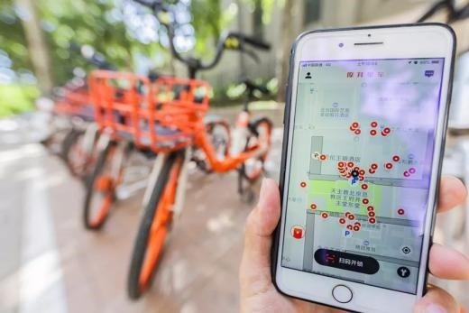现场：见缝插针施划停放区域
记者昨日在柏树胡同看到，便道上大约间隔300米就有一处施划的白色标线，原本在这里混乱停放的共享单车井然有序地停放在标线内。
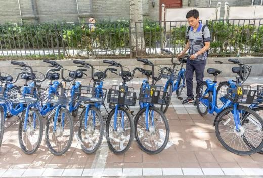据了解，东华门地区共设置了156个非机动车规范停放区和17个禁停区，范围为东至东单北大街、东四南大街，北至东四西大街、五四大街，南至东长安街，西至南池子大街、北池子大街。覆盖故宫、王府井周边的旅游景点、交通枢纽、商业街区、居住区等重要路段。参与“入栏结算”的共享单车有摩拜单车、ofo小黄车、滴滴小蓝和便利蜂。
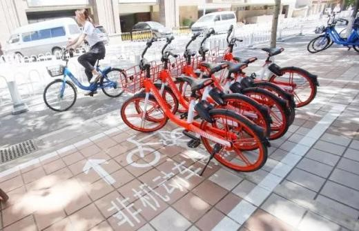“经过大量调研，本次入栏结算的停放区域划线采用‘见缝插针’的方式，即在不影响通行的前提下，从现有空间挤出停放区域，最终确定每300米左右设置一个停放区，停放区的大小依据场地的实际情况调整，最大的长度约68米，最小的长度约6米，每1米大概可以停放3辆共享单车，同时停车区划线要避开医院和学校等人流量大的地方。”区交通委相关负责人介绍，除了停放区外，在王府井步行街、韶九胡同、锡拉胡同等地还设置了禁停区，禁停区没有实体标志标线，用户可在共享单车APP中看到禁停区的规划范围。
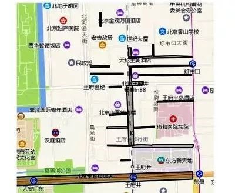处罚：不入栏停放将增收调度费
“停车区域的标志线由北斗导航勘测，采集标志线四个拐点的位置坐标，并将坐标导入至各共享单车APP中，形成‘电子围栏’，避免了安装道钉等设施占道、影响通行的情况，不会破坏道路环境、影响市容美观。”区交通委相关负责人介绍。
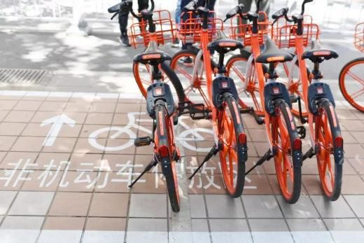同时，共享单车APP也将停放区和禁停区用不同的颜色加以区分，并且有明显的字母标识。摩拜共享单车负责人介绍，摩拜单车内部安装有定位芯片，实时采集、传输车辆位置，对比电子围栏的范围，可自动判断规范停车和违停行为，完成实时入栏结算。
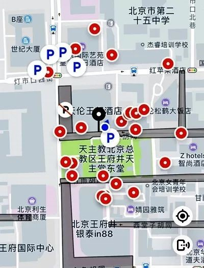对共享单车停放不入栏的用户，各共享单车公司采取统一的处罚标准：第一次违停后，APP后台通过短信形式发出警告；第二次则在使用费的基础上增加2元调度费；如果出现三次及以上，在使用费基础上，调度费将增加至5元。
不过，调度费在特定情况下可以返还。摩拜单车规定，如果停车人在关锁后24小时内，将禁停区任意一辆单车骑出，并停放在规定范围内，系统将自动退还调度费。ofo小黄车则计划将“纠错时间”定为48小时内。
管理：发现乱停 企业一刻钟到场
对未按规定停放的共享单车，各共享单车企业会根据系统监测情况，及时调整区域内共享单车数量，实时派遣运维人员调节停放区内车辆，保证停放区的空闲空间及停放秩序。
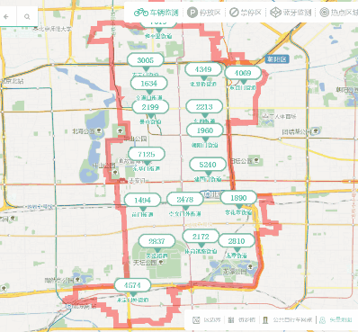“我们可以通过共享单车监管与服务平台看到各企业共享单车的总量、每日订单数、预警区域、不同区域的车辆点位。每个街道出现的共享单车数据也都会展示出来，超过7天没有被使用的‘淤积’车辆也会在图中标注”。区交通委相关负责人介绍，根据平台调度，发现乱停乱放、破损废弃等问题时，共享单车企业会在15分钟内派运维人员到场，将车辆码放整齐或移走，1小时内解决问题，否则将影响企业评分及在市场投放共享单车的数量。
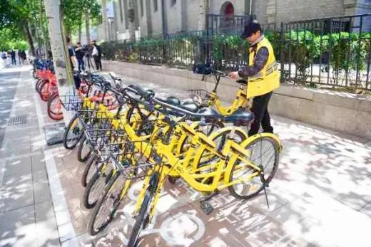据悉，东城区将加大各街道统筹辖区内非机动车管理的力度，进一步扩大治理共享单车的参与范围：区网格中心的网格员扫码核查违规投放的共享单车，并将巡查发现的乱停放等问题，派遣至共享单车企业处理；停车协管员协助码放共享单车、宣传“入栏结算”、疏导停放秩序；环卫中心组织环卫工人协同码放共享单车；市民也可在“北京公共自行车”微信公众号上扫码，监督共享单车投放情况。
记者体验 王府井周边单车停车秩序明显好转
5月27日，记者骑共享单车到王府井购物。在北京apm购物中心门口，记者打开APP发现，该区域由原来的白色变成了灰色，并标有禁停标志。
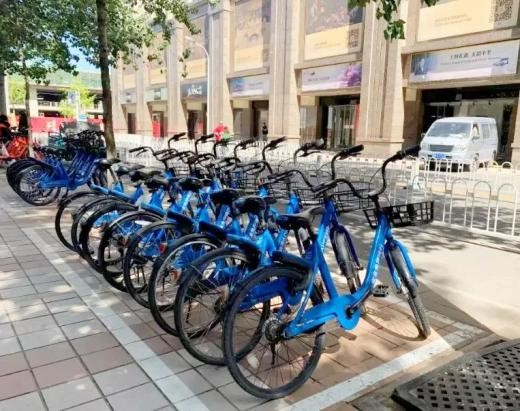根据APP提示，记者在东侧100米处找到规定停车区。停车区为长方形，崭新的白实线内写着“非机动车停车区”，区域内停了不少共享单车。该区域是王府井步行街的北侧入口，之前十字路口周围经常零散地停放着各种颜色的共享单车，如今这些车辆都整齐地摆放在停车区内。
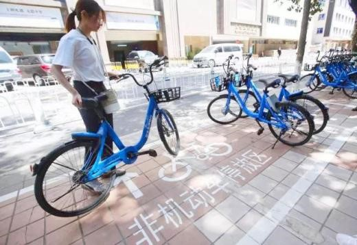更多的停车区位于王府井步行街周边道路的便道上。记者在现场看到，王府井百货大楼西侧、北侧，帅府园胡同，东安门大街周边便道上均施划了充足的停车区，停取车辆十分方便，停车秩序也明显好转。
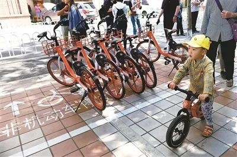